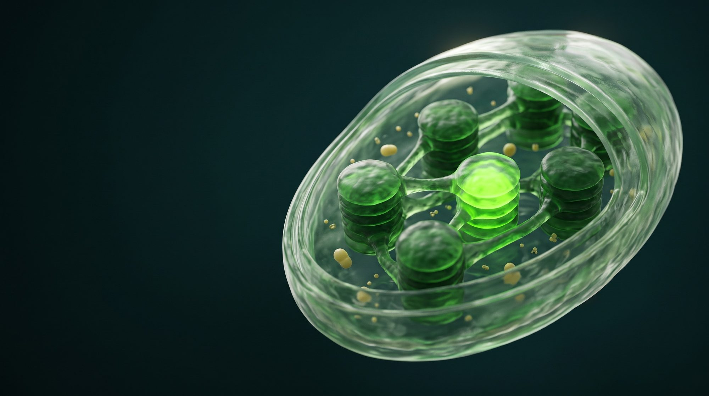
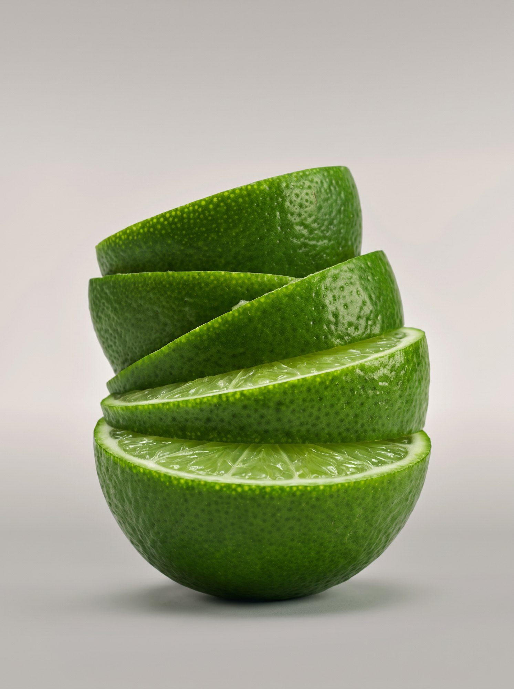
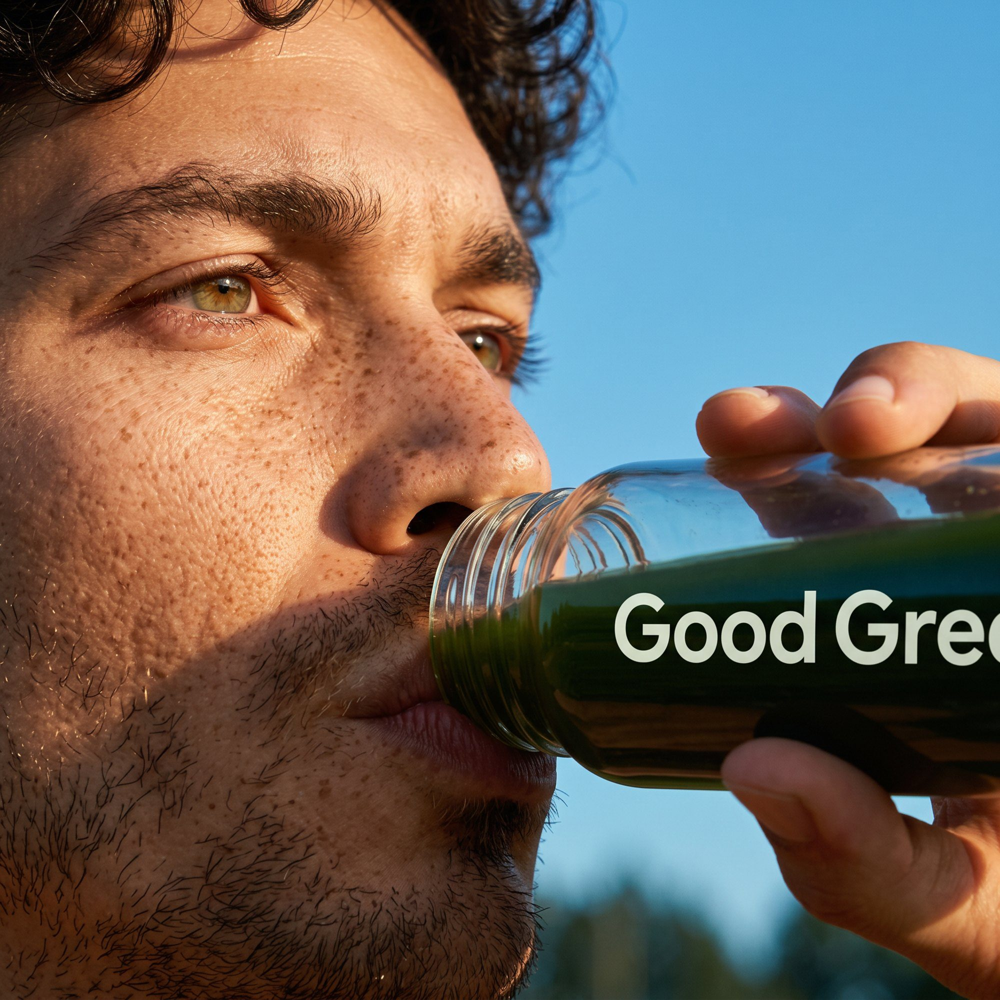

Explorar
Guias, receitas e artigos para a sua rotina verde.
Todos
Rotina verde
Receitas
Ciência
Rotina verde · 6 min
Como montar uma
rotina de verdes.

Ciência
O que é o microbioma intestinal

Receitas
Good Green com água de coco e limão
Ciência
Como ler a tabela nutricional
Rotina
Verdes antes ou depois do treino?
Receitas
Smoothie de abacaxi com hortelã

Rotina
5 jeitos de lembrar da sua dose